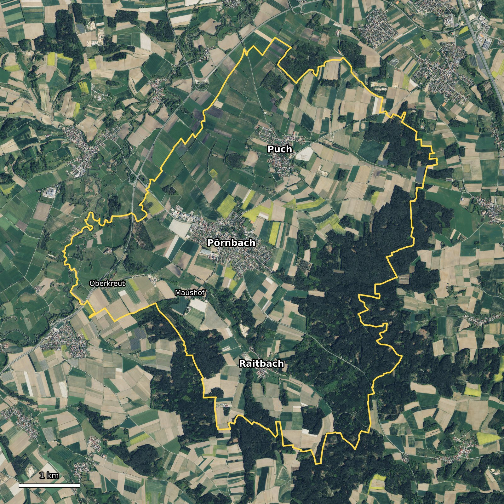
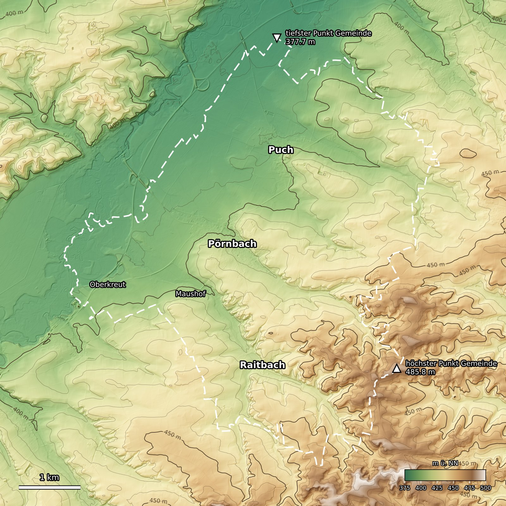
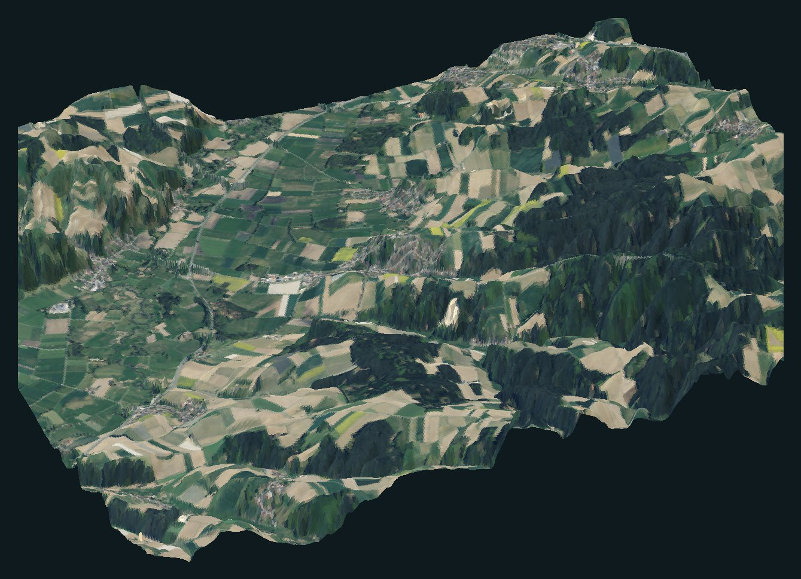
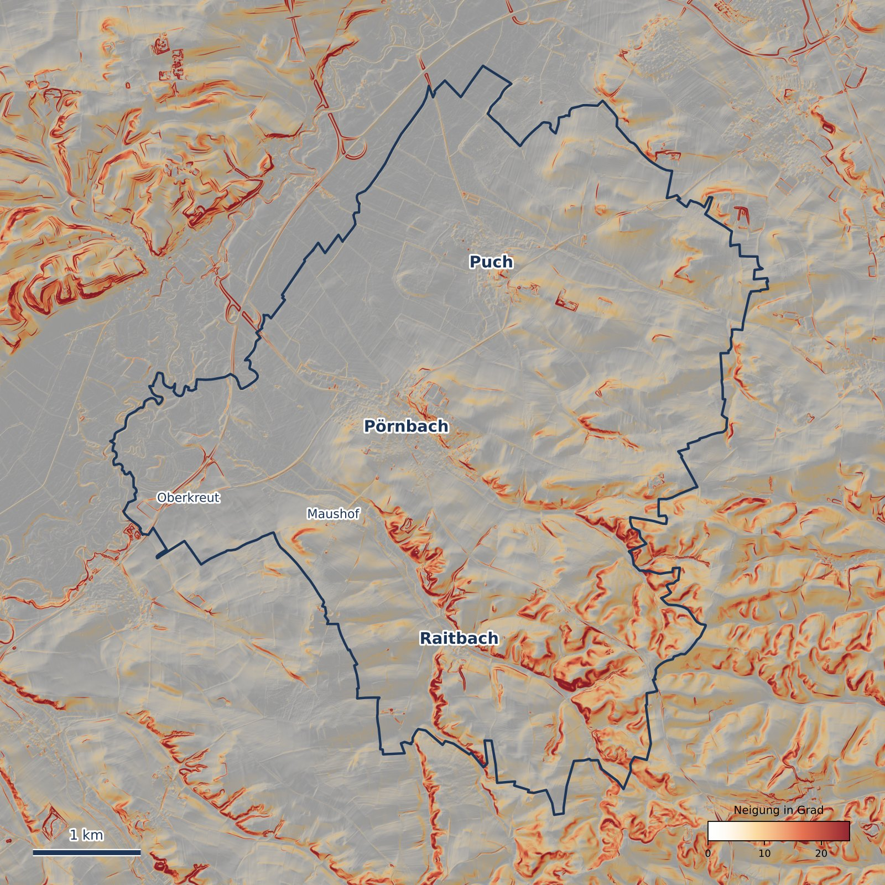
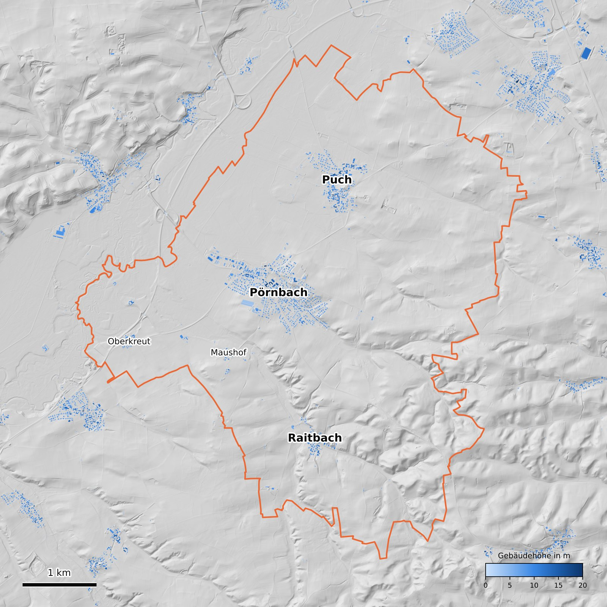
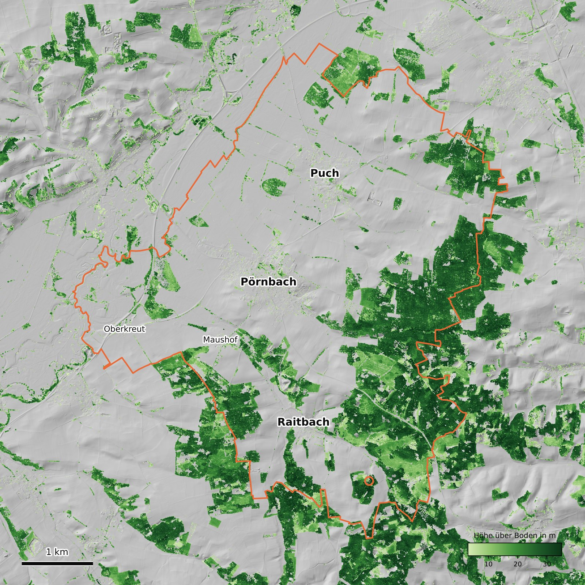
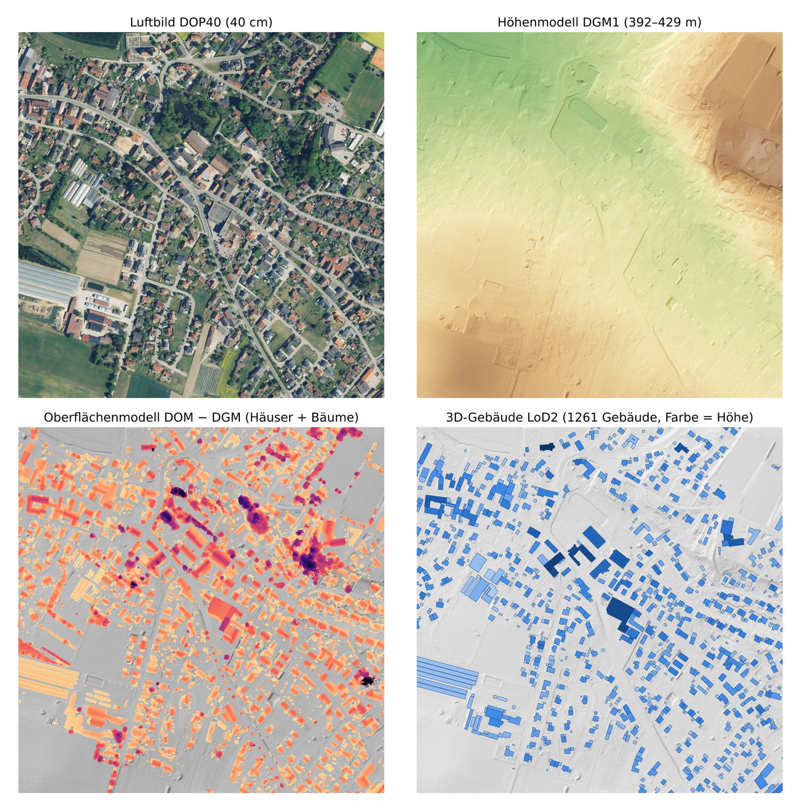

Was die Bayerische Vermessungsverwaltung über Erics Heimatgemeinde weiß: Höhenmodell, Luftbilder, 3D-Gebäude und Oberflächenmodell, ausgewertet für das 8,2 × 8,2 km große Kartenquadrat der BeamNG-Karte.
Kartenquadrat SW E 677 754 / N 5 383 274 · NO E 685 946 / N 5 391 466 · ETRS89 / UTM 32N
Alles liegt in 05 Pörnbach\Rohdaten, heruntergeladen am 18. und 22.10.2026 von geodaten.bayern.de.
| Datensatz | Inhalt | Kacheln | Größe |
|---|---|---|---|
| DGM1 | Geländehöhe ohne Bewuchs und Häuser, 1-m-Raster aus Laserscan | 81 × 1 km² | 265 MB |
| DOP40 | Luftbild 40 cm, Befliegung 2025 | 81 × 1 km² | 187 MB |
| DOP20 | Luftbild 20 cm, nur Ortskerne | 8 × 1 km² | 74 MB |
| LoD2 | 3D-Gebäude mit Dachform, Höhe, Nutzung, Adresse | 25 × 4 km² | 11 MB 180 MB entpackt |
| DOM20 | Oberfläche mit Bäumen und Häusern, auf 1 m verkleinert | 81 × 1 km² | 162 MB |
| Zusammen | ca. 700 MB | ||
Gelb ist die Gemeindegrenze aus OpenStreetMap. Im Nordwesten liegt das flache, offene Paartal, im Südosten der geschlossene Wald zwischen Raitbach und dem Kartenrand.



Fläche der Gemeinde je 5-m-Höhenstufe in km². Zwei Buckel: Talboden um 385–395 m und Hochfläche um 425 m.
Anteil der Gemeindefläche je Neigungsklasse. Gemessen auf 2-m-Raster.
Vom Südrand des Kartenquadrats über die drei Ortskerne bis zum Nordrand, ein Messpunkt alle 20 m.


Ortsteile durch Häufung der Grundrisse bestimmt (Abstand unter 70 m = gleicher Ort).
Amtliche Gebäudefunktion. Die größte Gruppe sind Nebengebäude: Scheunen, Schuppen, Hallen.
Gemeinde Pörnbach, Dachformen mit mindestens 8 Gebäuden.
Höhe vom Boden bis zum First in Metern, Anzahl Gebäude.
| Die höchsten Gebäude der Gemeinde | Ortsteil | Höhe |
|---|
Auch die Nachbargemeinden am Kartenrand sind in LoD2 vollständig enthalten.

Fläche in Hektar je Höhenklasse, nur innerhalb der Gemeinde.
Dasselbe Stück Ort in vier Datensätzen. Im Oberflächenmodell (unten links) sind Häuser hell und Bäume dunkel, weil Bäume meist höher sind als Dächer. Rechts unten die LoD2-Grundrisse, die direkt in der BeamNG-Karte stehen.
